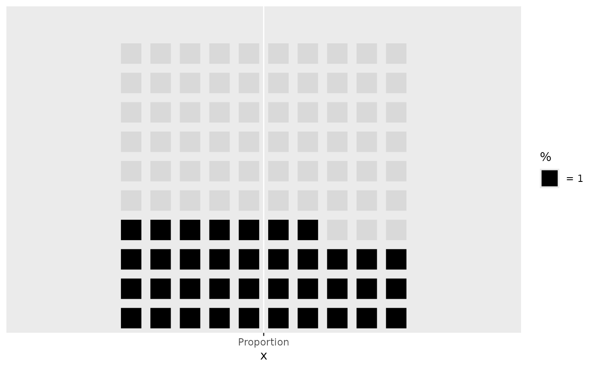
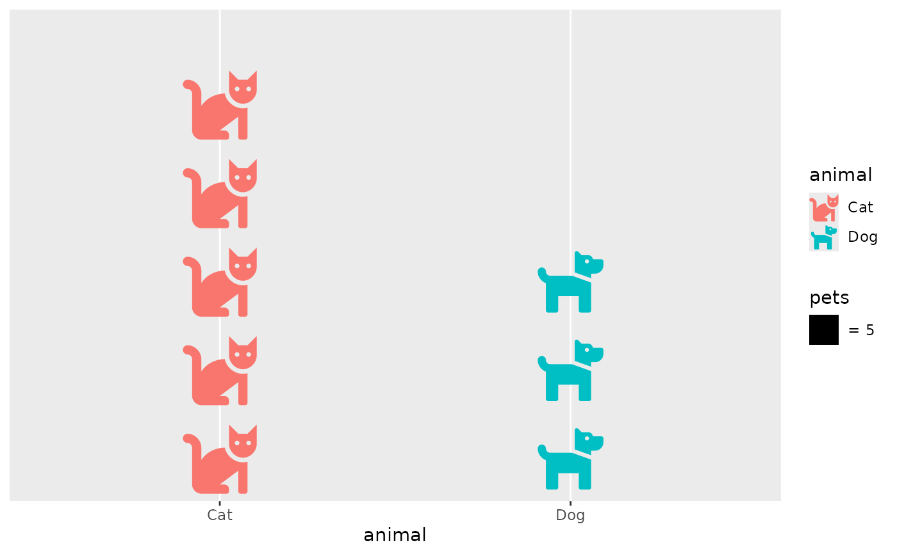

guide_pictogram() is the default guide for scale_value_continuous()
(and so, automatically, for geom_pictogram()'s value aesthetic): a
one-entry legend spelling out the ratio every pictogram already encodes
but never states: one icon, labelled with the symbol_value it stands
for (e.g. an icon glyph next to "= 1000"), the way an infographic
isotype chart captions "each icon represents 1000 units" or a map's
scale bar does for distance.
Arguments
- title
The legend title. Defaults to the
valuescale's name (typically set vialabs(value = ...), e.g. the unitsvaluecounts).- symbol_value
Override the ratio shown, instead of reading it from the matched layer. Rarely needed.
- label
Override the key's label text entirely, instead of the default
"= {symbol_value}".- icon
Which icon to draw in the key. Only needed when the matched layer's
iconaesthetic is mapped rather than fixed (as in the isotype-chart example below, where each category gets its own icon): there's no single icon to show automatically then, so the key falls back to a plain colour swatch instead of guessing a category's icon; set this to pick one deliberately.- theme
A
themeobject to style the guide individually or differently from the plot's theme settings. Thethemeargument in the guide partially overrides, and is combined with, the plot's theme. Arguments that apply to a single legend are respected, most of which have thelegend-prefix. Arguments that apply to combined legends (the legend box) are ignored, includinglegend.position,legend.justification.*,legend.locationandlegend.box.*.- position
A character string indicating where the legend should be placed relative to the plot panels. One of "top", "right", "bottom", "left", or "inside".
- direction
A character string indicating the direction of the guide. One of "horizontal" or "vertical".
- override.aes
A list specifying aesthetic parameters of legend key. See details and examples.
- order
positive integer less than 99 that specifies the order of this guide among multiple guides. This controls the order in which multiple guides are displayed, not the contents of the guide itself. If 0 (default), the order is determined by a secret algorithm.
- ...
ignored.
Details
Unlike a standard legend, this never shows one key per break:
symbol_value is a single ratio, not something that varies over
value's range, so there is only ever one row to show, and it comes
from the matched geom_pictogram() layer's own symbol_value rather
than from the scale's trained breaks.
Examples
library(ggplot2)
# bundled placeholder shapes; a real pack (e.g. icons::fontawesome) works the same
shapes <- icons::icon_set(system.file("icons", package = "ggicons"))
# legend reads "[square] = 1": each square is one percentage point
ggplot(NULL, aes(x = "Proportion", value = 37)) +
geom_pictogram(icon = shapes$square, n = 100, nrow = 10) +
labs(value = "%")

# a unit chart where each icon is worth 5: the legend spells that out
pets <- data.frame(animal = c("Cat", "Dog"), count = c(23, 15))
ggplot(pets, aes(animal, value = count, icon = animal, colour = animal)) +
geom_pictogram(symbol_value = 5) +
scale_icon_manual(values = c(icons::fontawesome$solid$cat, icons::fontawesome$solid$dog)) +
labs(value = "pets")
